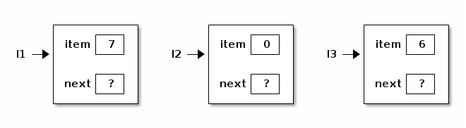
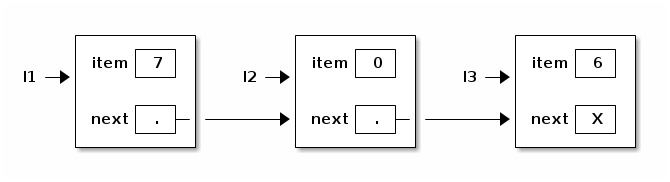
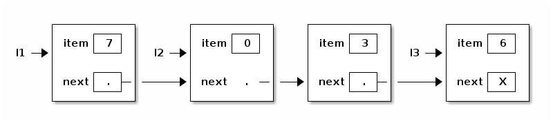
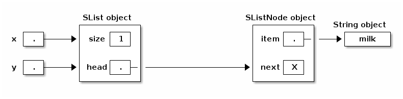

notes7
Table of Contents
1 Lecture 7
Today's reading: Goodrich & Tamassia, Section 3.2.
1.1 LISTS
Let's consider two different data structures for storing a list of things: an array and a linked list.
An array is a pretty obvious way to store a list, with a big advantage: it enables very fast access of each item. However, it has two disadvantages.
First, if we want to insert an item at the beginning or middle of an array, we have to slide a lot of items over one place to make room. This takes time proportional to the length of the array.
Second, an array has a fixed length that can't be changed. If we want to add items to the list, but the array is full, we have to allocate a whole new array and move all the ints from the old array to the new one.
public class AList { int a[]; int lastItem; public AList() { a = new int[10]; // The number "10" is arbitrary. lastItem = -1; } public void insertItem(int newItem, int location) { int i; if (lastItem + 1 == a.length) { // No room left in the array? int b[] = new int[2 * a.length]; // Allocate a new array, twice as long. for (i = 0; i <= lastItem; i++) { // Copy items to the bigger array. b[i] = a[i]; } a = b; // Replace the too-small array with the new one. } for (i = lastItem; i >= location; i--) { // Shift items to the right. a[i + 1] = a[i]; } a[location] = newItem; lastItem++; } }
1.2 LINKED LISTS (a recursive data type)
We can avoid these problems by choosing a Scheme-like representation of lists. A linked list is made up of nodes. Each node has two components: an item, and a reference to the next node in the list. These components are analogous to "car" and "cdr". However, our node is an explicitly defined object.
public class ListNode { // ListNode is a recursive type public int item; public ListNode next; // Here we're using ListNode before } // we've finished declaring it.
Let's make some ListNodes.
ListNode l1 = new ListNode(), l2 = new ListNode(), l3 = new ListNode(); l1.item = 7; l2.item = 0; l3.item = 6;

Now let's link them together.
l1.next = l2; l2.next = l3;
What about the last node? We need a reference that doesn't reference anything. In Java, this is called "null".
l3.next = null;

To simplify programming, let's add some constructors to the ListNode class.
public ListNode(int i, ListNode n) { item = i; next = n; } public ListNode(int i) { this(i, null); }
These constructors allow us to emulate Scheme's "cons" operation.
ListNode l1 = new ListNode(7, new ListNode(0, new ListNode(6)));
1.3 Linked lists vs. array lists
Linked lists have several advantages over array-based lists. Inserting an item into the middle of a linked list takes just a small constant amount of time, if you already have a reference to the previous node (and don't have to walk through the whole list searching for it). The list can keep growing until memory runs out.
The following method inserts a new item into the list immediately after "this".
public void insertAfter(int item) { next = new ListNode(item, next); } l2.insertAfter(3);

However, linked lists have a big disadvantage compared to arrays. Finding the nth item of an array takes a tiny, constant amount of time. Finding the nth item of a linked list takes time proportional to n. You have to start at the head of the list and walk forward n - 1 nodes, one "next" at a time.
Many of the data structures we will study in this class will be attempts to find a compromise between arrays and linked lists. We'll learn data structures that are fast for both arbitrary lookups (like arrays) and arbitrary insertions (like linked lists).
1.4 Lists of Objects
For greater generality, let's change ListNodes so that each node contains not an int, but a reference to any Java object. In Java, we can accomplish this by declaring a reference of type Object.
public class SListNode { public Object item; public SListNode next; }
The "S" in "SListNode" stands for singly-linked. This will make sense when we contrast these lists with doubly-linked lists later. You'll see the SListNode class in next week's lab and homework.
1.5 A List Class
There are two problems with SListNodes.
(1) Suppose x and y are pointers to the same shopping list. Suppose we insert a new item at the beginning of the list thusly:
x = new SListNode("soap", x);
y doesn't point to the new item; y still points to the second item in x's list. If y goes shopping for x, he'll forget to buy soap.
(2) How do you represent an empty list? The obvious way is "x = null". However, Java won't let you call a SListNode method–or any method–on a null object. If you write "x.insertAfter(item)" when x is null, you'll get a run-time error, even though x is declared to be a SListNode. (There are good reasons for this, which you'll learn later in the course.)
The solution is a separate SList class, whose job is to maintain the head (first node) of the list. We will put many of the methods that operate on lists in the SList class, rather than the SListNode class.
public class SList { private SListNode head; // First node in list. private int size; // Number of items in list. public SList() { // Here's how to represent an empty list. head = null; size = 0; } public void insertFront(Object item) { head = new SListNode(item, head); size++; } }

Now, when you call x.insertFront("fish"), every reference to that SList can see the change.

Another advantage of the SList class is that it can keep a record of the SList's size (number of SListNodes). Hence, the size can be determined more quickly than if the SListNodes had to be counted.